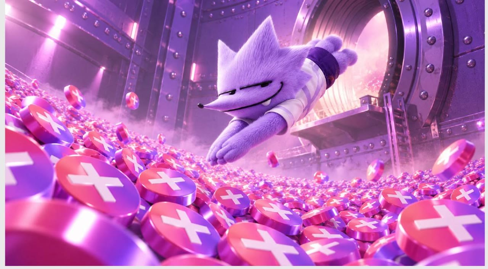
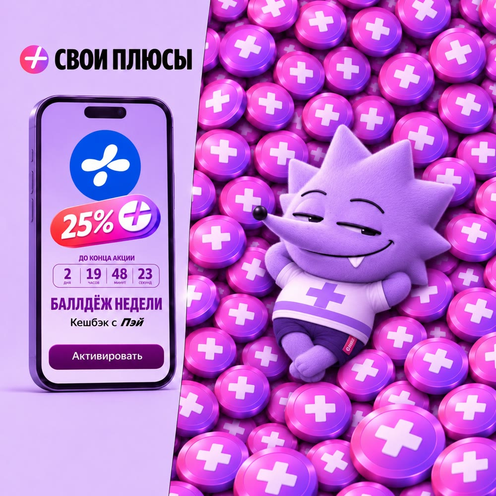
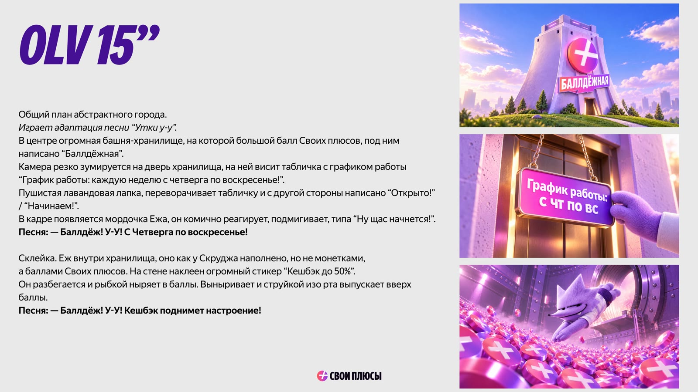

Исходник Тимура · 0050 v003 · 1,2 с · активные баллы
Шот 0050 — Плывёт


@video_1 — этот рендер. Эмоция подставляется из выбранной карточки выше.
Два рендера Тимура гоняем через Seedance 2.5 в режиме video edit. Натягиваем визуал из клиентского брифа и тестируем, какие эмоции нейронка налепит на морду ежа.
Одна эмоция на прогон, начать с первых трёх. Нажми карточку, и она подставится в оба промпта ниже.
Seedance 2.5 · video edit · звук выкл · сначала черновики 480p по 1–2 на эмоцию, лучшие довести до 1080p.
Исходник Тимура · 0050 v003 · 1,2 с · активные баллы
@video_1 — этот рендер. Эмоция подставляется из выбранной карточки выше.
Исходник Тимура · 0060 v003 · 1,4 с · щелчок монеткой

@video_1 — этот рендер. Эмоция подставляется из выбранной карточки выше.
0050_emo1_bliss_v01.mp4.Эталон картинки: на это равняемся по шерсти, свету и баллам.

Бриф целиком




Моделька